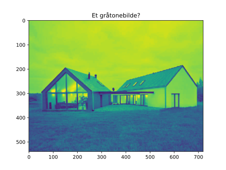
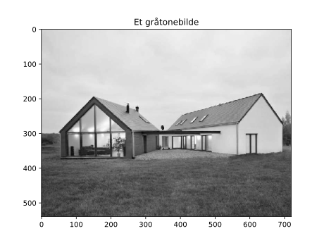

Installasjon
Anaconda
Programmering
Testing underveis
Grunnleggende
Numpymodulen og arrays
Bildebehandling
Alle programmene på siden er skrevet i Python 3.6, men det skal også gå fint å bruke 3.7. Si gjerne i fra hvis noen programmer ikke kan kjøres på grunn av forskjellige versjoner!
Her kan du finne installasjonsguide til det operativsystemet du bruker: Installasjonsguide
For å teste om Anaconda har blitt installert og brukes av systemet, kan man skrive
conda list
i kommandovinduet. Ved en suksessful installasjon vil en liste over diverse pakker som har blitt installert dukke opp i kommandovinduet.
Da er det ofte behjelpelig å bruke Python shell-et. Den aktiveres i kommandovinduet ved å skrive inn
python
Shell-et gjør det mulig å utføre all kode som skrives inn med én gang etter å ha trykket på Enter-tasten. Det er også mulig å se direkte verdien til variabler ved å simpelthen skrive inn variabelnavnet som skal vises frem. Det er altså rom for testing av funksjoner og se direkte konsekvenser av dem uten å skrive en egen fil, lagre, så kjøre. Fra egen erfaring, har bruk av shellet til å teste funksjoner/ideer o.l redusert betraktelig antallet lumske bugs!
For å komme ut av shell-et, kan man skrive exit(). Det er også viktig å huske på at ingenting av deklarasjoner, definisjoner o.l blir lagret.
Et program i Python har filendingen .py, og kjøres i kommandovinduet ved å skrive
python <navn på programmet ditt>.py
For at programmet skal skrive ut noe til skjerm, brukes funksjonen print. Et eksempel på hvordan print kan brukes, er:
print("Hello,world!")
Programmet vil da skrive til skjerm Hello,world!.
Det er også mulig å skrive ut verdien til variabler ved å bruke printf-formattering:
x = 1
y = -1
print("(x,y) = (%g,%g)"%(x,y))
Programmet vil skrive ut (1,-1). Prosenttegnet etterfulgt av bokstaven g bestemmer hvordan verdien av variabelen skrives til skjerm. I dette tilfellet vil formatteringen av verdien bestemmes ettersom hvor mange desimaler tallverdien har.
Det finnes en oversikt her over hvordan man kan bestemme utskriften av en verdi.
Programmet under demonsterer aritmetiske operasjoner, samt potens siden den skiller seg nokså ut fra de nevnte språkene.
a = -2
b = 3
# Addisjon:
print("a + b =", a+b)
# Subtraksjon
print("a - b =", a-b)
# Multiplikasjon
print("a * b =", a*b)
# Divisjon
print("a / b =", a/b)
# Opphøying
print("a opphøyd i b = a**b = ",a**b)
Programmet kan lastes ned her (høyreklikk og trykk "lagre lenke som"/"save link as")
For å lage en tom liste, brukes klammeparantes:
liste1 = []
Man kan utvide liste1 ved å bruke append. Funksjonen append legger til et element bakover i listen:
liste1.append(10) # Nå har liste kun ett element - nemlig 10
liste1.append(12) # Elementet 12 er nå plassert bak 10
print(liste1)
Kjører men programmet, vil man se at det skriver ut [10,12].
For å lage en liste med noen elementer, brukes klammeparantes rundt elementene som er separert med komma:
a = 1
b = sum # nå er b en funksjon - nemlig den innebygde funksjonen sum.
c = "hei"
liste2 = [a,b,c]
Når man skal hente ut elementer fra en liste, er det viktig å huske at første element ligger på 0-te plass (i motsetning til Matlab der første element ligger på 1-te plass). For å hente ut et element fra en liste, skriver vi først navnet til variabelen knyttet til listen, og deretter klammeparantes med et tall inni som forteller fra hvilken plass programmet skal hente elementet fra.
print(liste1[0]) # skriver ut 10
print(liste2[2]) # skriver ut "hei"
For-løkker:
Hensikten bak en for-løkke er å utføre en kodesnutt et bestemt antall ganger.
For-løkker er kanskje én av de viktigste redskapene som kommer til å bli brukt i emnet. Derfor, er det viktig å ha god kjennskap til hvordan den kan brukes og spesielt indekseringen!
Konstruksjonen av en for-løkke er:
for <element-navn> in <liste over verdier>:
# kode som bruker liste-elementene
I
En svært nyttig konstruksjon av en liste-lignende objekt er range, og ofte viser seg til å være svært nyttig i for-løkker,
Funksjonen range gjøre det mulig at man kan hente heltall fra et gitt intervall ved en gitt steglengde:
for <element-navn> in range(start,stopp,steg)
Her vil
En demonstrasjon til hvordan et program kan skrive ut alle partall mellom 10 og 20 ved å bruke for-løkke og range:
for i in range(10,22,2)
print(i)
Man kan også hente ut hvert enkelt listeelement:
for i in range(len(liste1)): # funksjonen len finner antall elementer i liste1
print(liste1[i])
eller:
for listeelement in liste1:
print(listeelement)
While-løkker:
Det hender også at man ikke vet på forhånd hvor mange ganger en kodesnutt skal utføres av programmet. Dette kan f.eks være ved fjerning av piksler som vi ikke ønsker i bildet og søk etter noe i bildet.
En while-løkke er konstruert slik:
while <en betingelse er evaluert til True>:
# kodesnutt som skal utføres
En betingelse kan være en sjekk på om et tall er større enn en gitt verdi, om en variabel har endret seg osv.
Numpy er en modul som kommer med en svært nyttig type å jobbe med, nemlig arrays. En array er en matrise, og minner veldig om Pythons lister. Det som er veldig fint med arrays, er at man kan utføre matriseoperasjoner som er både effektive og nyttige i bildebhandling. Arrays kan utføre langt mer enn det Pythons innebygde lister kan mtp matriseoperasjoner. Det er også vanlig at bilder som leses inn i Python-programmer er av typen array siden bilder er i bunn og grunn matriser.
import numpy as np
Her importeres numpy, men med navnet np. For å bruke funksjoner fra numpy ved denne formen for importering, må vi skrive foran hver funksjon fra numpy dets ''navn'' for at programmet skal forstå fra hvilken modul funksjonen hentes fra.
Det som gjør numpy spesielt nyttig å bruke, er at elementvis aritmetikk er implementert hos vektorer (en vektor sees på som en 1 x n - matrise) og :
import numpy as np
print("- vektorer -")
# Lage to 1 x 3 matriser:
a = np.array([1,2,3])
b = np.array([11,12,13])
print("a =",a)
print("b =",b)
# elementvis addisjon mellom vektorene
print("a+b =",a+b)
# elementvis multiplikasjon mellom vektorene
print("a*b =",a*b)
# elementvis addisjon mellom en skalar og vektor
print("3 addert med hvert element i a:",3+a)
# elementvis multiplasjon mellom en skalar og vektor
print("3 multiplisert med hvert element i a:",3*a)
print("\n- matriser -")
# Lage to 2 x 2 matriser:
a = np.array([[1,2],[3,4]]) # [1,2] er nå 0-te rad, [3,4] er 1-te rad
b = np.array([[11,12],[13,14]])
print("a =",a)
print("b =",b)
# elementvis addisjon mellom matrisene
print("a+b =",a+b)
# elementvis multiplikasjon mellom matrisene
print("a*b =",a*b)
Programmet kan lastes ned her (høyreklikk og trykk "lagre lenke som"/"save link as")
Noen metoder som, av erfaring, har vært til nytte i bildebehandling:
Det går også an å lese inn bilde fra matplotlib.pyplot, som ofte brukes ved plotting og framvising av bilde, men den har ingen metode implementert, pr. når denne siden ble skrevet, som kan konvertere et fargebilde til gråtonebilde. Det er hovedsakelig gråtonebilder det blir fokusert på i emnet, og derav er det kjekt å kunne konvertere et fargebilde til et gråtonebilde.
En modul som har implementert funksjoner for innlesing og gråtonekonvertering av bilder, er imageio.
Funksjonen for innlesing heter imread. For å lese inn et bilde, f.eks houses.png, kan man bruke imread slik:
from imageio import imread
img = imread("houses.png",as_gray = True)
Argumentet as_gray = True i imread sørger for at bildet er konvertert til gråtone. Et fargebilde har ofte tre dimensjoner, mens et gråtonebilde har to. For å se om et innlest bilde faktisk er gråtone, kan man f.eks bruke
print(len(img.shape))
der shape returnerer en liste med verdier som forteller hvor stor matrisen img er. Er matrisen 3-dimensjonal vil listen være 3 elementer lang, og er den 2-dimensjonal vil listen være 2 elementer lang.
Modulen matplotlib.pyplot har metoder som egner seg godt til all form for visualisering av data - også for bilder. For å vise fram et bilde bruken en imshow.
Programmet under demonstrer hvordan et program kan lese inn et bilde og vise det fram i egne vindu.
from imageio import imread
import matplotlib.pyplot as plt
img = imread("houses.png",as_gray = True) # as_gray=True gjør et fargebilde til gråtonebilde
plt.imshow(img)
plt.title("Et gråtonebilde?")
plt.figure() # For å lage et nytt vindu
plt.imshow(img,cmap='gray')
plt.title("Et gråtonebilde")
plt.show() # Husk dette for å faktisk kunne se visualiseringene!
Programmet kan lastes ned her (høyreklikk og trykk "lagre lenke som"/"save link as")
som gir disse bildene:
Figure 1: Bilde av det første vinduet.

Figure 2: Bilde av det andre vinduet.

Her kan du se at det første bilde ikke er gråtone - selvom det er tenkt til å være et gråtonebilde. Dette skjer fordi matplotlib.pyplot har en standard, predefinert måte å fremvise tallverdier som farger på. Det må spesifiseres at en ønsker å framvise bildet som gråtone. Dette gjøres med å spesifisere et colormap ved å sende inn som argument cmap=<ønsket colormap>. Det finnes flere colormaps, hvis en ønsker å bruke det.
Dette er også viktig å bruke figure() hvis man ikke ønsker at det nye bildet som fremvises overlapper bildet som tidligere har blitt sendt inn til imshow.
Det kan også hende at etter noen operasjoner at de matrisene en jobber med, har verdier som er større enn det et bilde bør ha. Et 8-bit bilde har verdier fra 0 til og med 255.
Ved fremvising, tilpasser matplotlib seg etter de verdiene som den innsendte matrisen har. Dette kan føre til at vi ikke ser resultatene etter å ha utført noen operasjoner.
For å sørge for at matplotlib viser bildet som om der vi kan forvente å ha verdier mellom 0 og 255, må en bruke vmin og vmax:
plt.imshow(img,vmin=0,vmax=255)
Noen ganger kan bildet se lite ut i vinduet. Det er mulig å sørge for at matplotlib skalerer bildet slik at det fyller hele vinduet. Det kan gjøres slik:
plt.imshow(<bilde og andre argumenter>, aspect='auto')
Bildebehandling er et fag der eksperimentering er viktig, og da er det nyttig å vise fram og presentere resultatene programmet har fått.
from imageio import imread
import matplotlib.pyplot as plt
import numpy as np
img = imread("houses.png", as_gray = True)
plt.imshow(img,cmap='gray')
plt.title("Originalbilde")
# Øke kontrast
img_increased_contrast = img*1.5
# Gjøre bildet lysere
img_brighter = img + 100
plt.figure()
plt.subplot(2,1,1) # subplot deler et vindu i flere delplott.
plt.imshow(img_increased_contrast,cmap='gray',vmin=0,vmax=255,aspect='auto')
plt.title("Økt kontrast")
plt.subplot(2,1,2)
plt.imshow(img_brighter,cmap='gray',vmin=0,vmax=255,aspect='auto')
plt.title("Økt lyshet")
plt.show()
Programmet kan lastes ned her (høyreklikk og trykk "lagre lenke som"/"save link as")
God programmering!